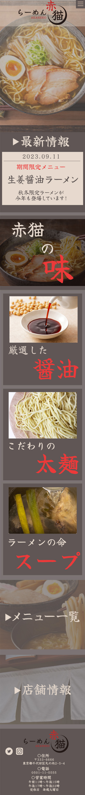
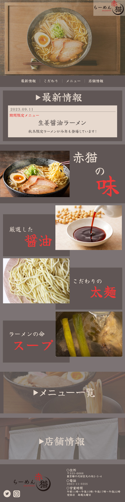
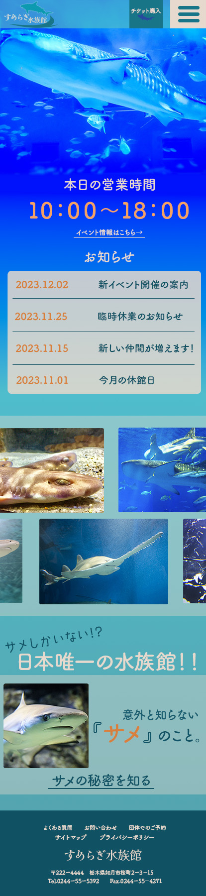
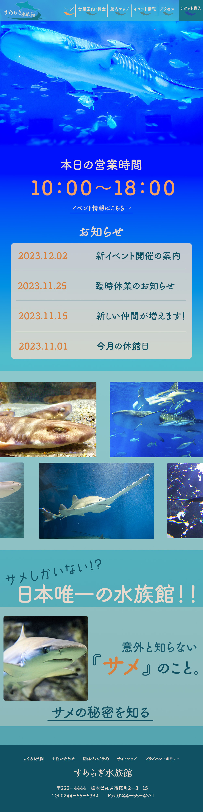
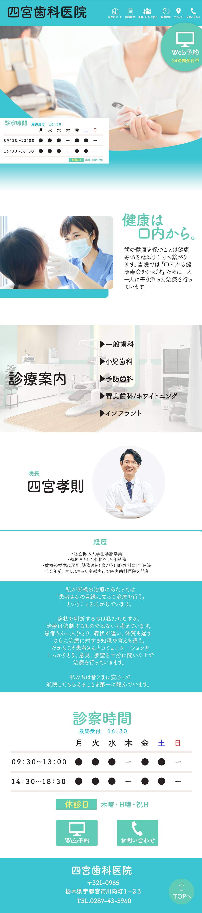
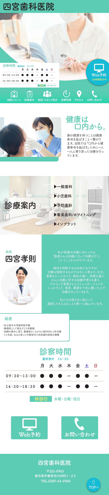

▲スマートフォン表示版

▲PC表示版
らーめん赤猫 LP
・架空のラーメン店のLPを制作する
・ラーメンが好きな大人の人たち全般
８時間
Adobe Photoshop / AdobeIllustrator
・スマートフォン表示版とPC表示版の二種類のトップページのLPデザインを作成。
・シンプルかつ一目見ただけで分かるようなデザインを目指した。
・店名が分かりやすいようなロゴを自分で作成。
・訪れる人にどんな店なのか分かりやすいよう、店のラーメンの特徴を説明する部分を大きく取り上げた。
・実際のラーメン屋のHPをいくつか参考にし、配置やデザインを工夫した。
・最後にSNSのアイコンを配置した

▲スマートフォン表示版

▲PC表示版
すめらぎ水族館 LP
・架空のサメ専門の水族館のLPを制作する
・通常の水族館に来る年齢層全般
８時間
Adobe Photoshop / AdobeIllustrator
・スマートフォン表示版とPC表示版の二種類のトップページのLPデザインを作成。
・サメに詳しくない人でも行きたいと思えるような、わくわくするデザインを目指した
・メインカラーを青に設定し、目立たせたい部分に補色のオレンジを使用。
・サメの画像を多く使用し、見た人に水族館のイメージが伝わりやすいよう考えた。
・いくつかの水族館のHPを参考にし、実際にありそうな水族館のLPを作れるよう配置などを工夫した


▲PC表示版
四宮歯科医院 LP
・架空の歯科医院のLPを制作する
・若い年代から年配の方メイン
８時間
Adobe Photoshop / AdobeIllustrator
・PC表示版で異なるデザインのトップページLPデザインを二種類作成。
・HPを見て、来院する際に少しでも安心感を持てるような明るいデザインを目指した。
・明るく、歯科医院の清潔感が伝わるようにメインカラーを青や緑の寒色に設定した。
・時間の関係上大幅なページ内の内容の変更はせずにデザイン面で違いを持たせた。
・実際にHPに訪れる人が見たい情報として、予約ページや診察時間が挙げられると考え、一番最初の部分に入れた。
・硬い印象にならないよう丸みのあるフォントを選んだ。